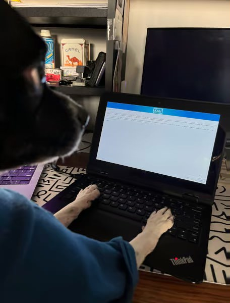
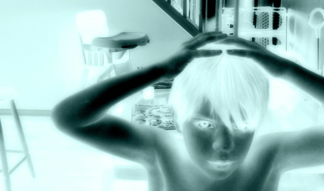

I haven’t gotten into JavaScript yet, but it’s on the list. For now, I’m focused on building solid foundations. I enjoy writing blog posts about things I figure out and putting my work into a sandbox where I can break stuff, fix it, and learn from it.
Hi, I'm Damien. I'm 19, based in Illinois, and I've always liked figuring out how things work. Before I started learning to build websites, I was mostly into cars and mechanical stuff. Now I'm shifting that curiosity into tech—especially Linux and web development. Right now, I’m learning the basics of HTML and CSS, and I’m using Bash to write simple scripts that make my system work the way I want. I use Linux as my daily OS, and I’ve been exploring different distros, terminal setups, and automating backups. I like working close to the system—it feels powerful and lightweight.
Outside of tech, I still mess with cars and guitars when I can. I like working with my hands and solving problems, whether that’s in the garage or at the keyboard. I built this portfolio to track what I’m learning, not to pretend I’m an expert. If you’re new to coding too, we’re probably in the same boat. Let’s learn as we go.